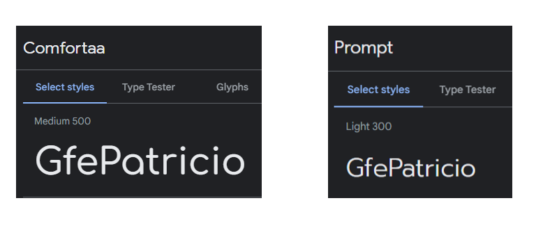
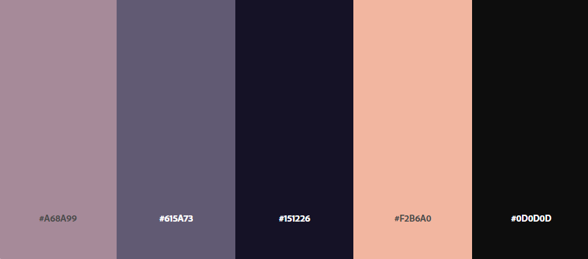

GfePatricio
GfePatricio es una empresa de desarrollo web y marketing digital, creada por Patricio Reynoso Bazaldua el 01 de abril del 2022. El objetivo de la empresa es ayudar a las empresas emergentes a crear la identidad e imagen de su empresa.
GfePatricio es una empresa de desarrollo web y marketing digital, creada por Patricio Reynoso Bazaldua el 01 de abril del 2022. El objetivo de la empresa es ayudar a las empresas emergentes a crear la identidad e imagen de su empresa.
La tipografía utilizada para la se divide en dos secciones una para títulos y otra para contenido. Para el titulo se utilizó la fuente “Comfortaa” y la variable utilizada es la “Medium 500”. Para el contenido se utilizo la fuente “Prompt” y la variable utilizada es la “Light 300”.
La paleta utilizada contiene 5 colores en la cual predominan los tonnos morados y azules, para los títulos se utiliza: #F2B6A0, #615A73 y #151226. Para el contenido se utiliza: #0D0D0D, #F2B6A0 y #151226. Para color de fondo se utiliza: #151226 y #A68A99.
GfePatricio es una marca de marketing especializado en desarrollo web. La marca pude funcionar en distintas posiciones, así como: Desarrollador principal, soporte, consulto o finalizador. Entre los servicios que ofrece están: